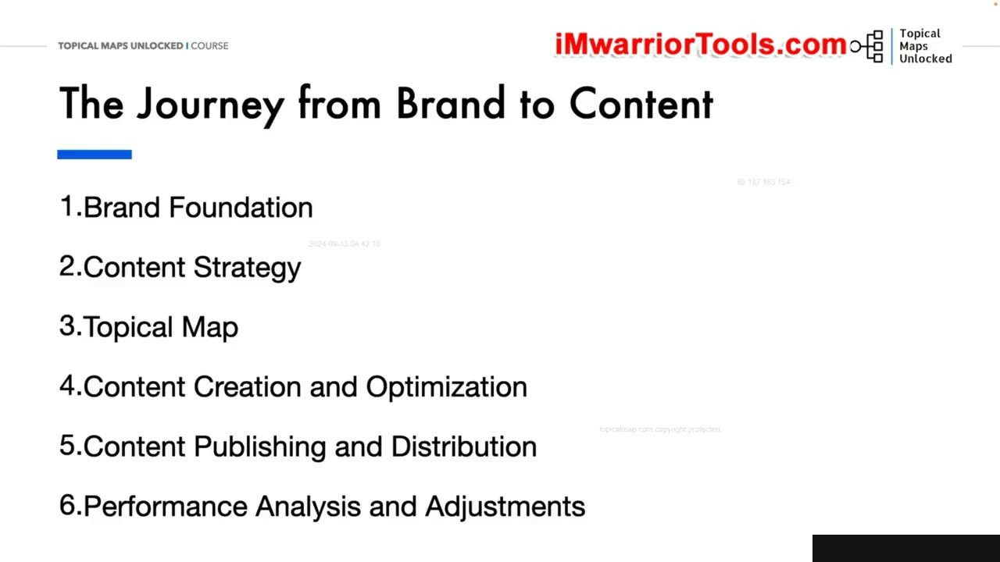
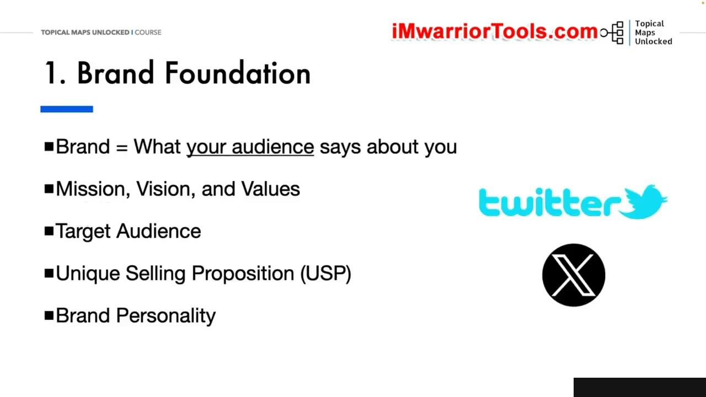
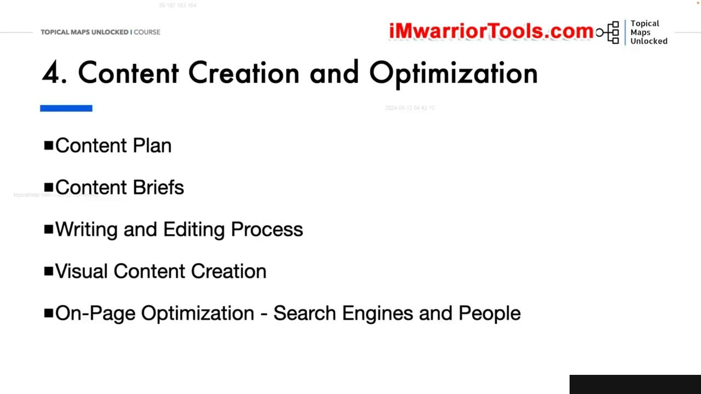
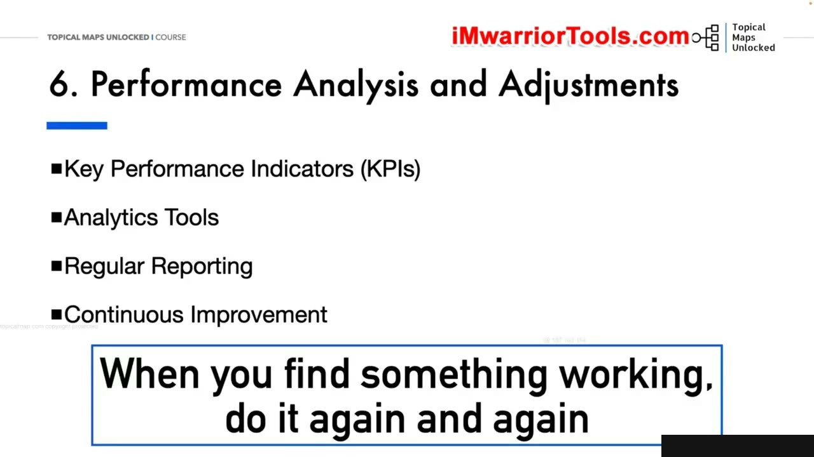

Putting It All Together – From Brand to Content
Tổng quan Hành trình 6 Bước Kết hợp Toàn diện
Trong bài học mở đầu của Học phần Thực hành Tổng hợp (Module 11), Yoyao Hsueh hệ thống hóa toàn bộ kiến thức đã học thành một bức tranh tổng thể gắn kết chặt chẽ: Putting It All Together – From Brand to Content.
Hành trình xây dựng thẩm quyền chủ đề (Topical Authority) không phải là những hành động rời rạc, mà là một chuỗi 6 giai đoạn nối tiếp có tính kế thừa sâu sắc:
- Thiết lập Nền tảng Thương hiệu (Brand Foundation): Xác định căn cước thương hiệu, giá trị cốt lõi, tuyên bố sứ mệnh và đối tượng mục tiêu.
- Phát triển Chiến lược Nội dung (Content Strategy): Phân bổ tỷ lệ nội dung, lập kế hoạch trụ cột và định hình phong cách truyền tải.
- Thiết kế Bản đồ Chủ đề (Topical Map Creation): Nghiên cứu ngách, gom cụm từ khóa theo ngữ nghĩa và thiết lập kiến trúc thông tin Silo.
- Sản xuất & Tối ưu hóa Nội dung (Content Creation): Tạo Content Brief chuẩn chỉnh, viết bài chuyên sâu và tối ưu hóa liên kết nội bộ.
- Xuất bản & Phân phối Đa kênh (Publishing & Distribution): Thiết lập lịch xuất bản đồng bộ, tái sử dụng nội dung trên YouTube, Pinterest, Social Media.
- Đo lường, Phân tích & Tái cơ cấu (Analysis & Iteration): Đánh giá hiệu suất Silo trên GA4/GSC, xử lý cannibalization và cập nhật Topical Map định kỳ.
Mỗi bước đều là nền móng vững chắc cho bước tiếp theo, đảm bảo trang web phát triển bền vững và không bao giờ bị lạc hướng trong ma trận từ khóa.

Tích hợp Nhận diện Thương hiệu vào Cấu trúc Nội dung
Yoyao nhấn mạnh rằng một sai lầm phổ biến của người làm SEO là chỉ tập trung vào dung lượng tìm kiếm (Search Volume) mà quên đi căn cước thương hiệu:
Một Topical Map mạnh mẽ phải phản ánh được chuyên môn đích thực và giá trị khác biệt của thương hiệu. Khi khách hàng truy cập vào bất kỳ bài viết nào, họ phải cảm nhận được tiếng nói thương hiệu nhất quán (Brand Voice) và niềm tin chuyên gia.
- Mọi chủ đề con đều phải quy về mục tiêu phục vụ giải quyết nỗi đau của khách hàng mục tiêu đã xác định ở Bước 1.
- Thương hiệu không chỉ bán sản phẩm/dịch vụ mà còn là nguồn tài nguyên kiến thức đáng tin cậy nhất trong ngành.
Sự kết hợp này giúp biến lượng truy cập tìm kiếm tự nhiên thành những khách hàng trung thành với thương hiệu.

Chuyển hóa Chiến lược Nội dung thành Lộ trình Triển khai Cụ thể
Từ định hướng chiến lược tổng quát, Yoyao hướng dẫn cách phân bổ bài viết theo từng giai đoạn phát triển của trang web:
- Giai đoạn Khởi động (Seed Phase): Tập trung hoàn thiện 100% cho một Silo cốt lõi duy nhất nhằm nhanh chóng xác lập Topical Authority ban đầu với Google.
- Giai đoạn Mở rộng (Expansion Phase): Bắt đầu triển khai các Silo phụ trợ tiếp theo theo thứ tự ưu tiên thương mại và mức độ cạnh tranh.
- Giai đoạn Duy trì (Maintenance Phase): Tối ưu lại nội dung cũ, cập nhật số liệu mới và củng cố hệ thống liên kết nội bộ liên tục.
Quy trình phân kỳ này giúp tối ưu hóa nguồn lực nhân sự, ngân sách viết bài và mang lại kết quả tăng trưởng thứ hạng rõ rệt qua từng tháng.

Đồng bộ Đa kênh và Vòng lặp Cải tiến Liên tục
Phần kết của bài học nhấn mạnh vào vòng lặp phản hồi (Feedback Loop) để đảm bảo Topical Map luôn là một thực thể sống động:
Thị trường và hành vi tìm kiếm của người dùng luôn thay đổi. Bằng cách kết hợp dữ liệu xếp hạng thực tế từ GSC và mức độ tương tác đa kênh, bạn liên tục phát hiện các từ khóa ngữ nghĩa mới để bổ sung vào Topical Map.
Đây chính là chìa khóa giúp những trang web áp dụng phương pháp của Yoyao giữ vững vị thế dẫn đầu ngay cả khi Google tung ra các đợt cập nhật thuật toán cốt lõi lớn.

Nguồn và đối chiếu
- Topical Maps Unlocked 2.0 · 11-From Theory to Practice Module/01-Putting It All Together – From Brand to Content.mp4 (Video bài học chính).
- Bản tiếng Anh không có video riêng cho bài học này; nội dung đối chiếu trực tiếp từ slide và video chính.